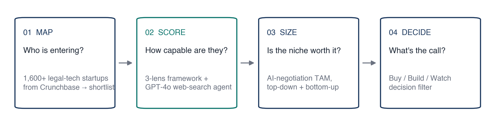
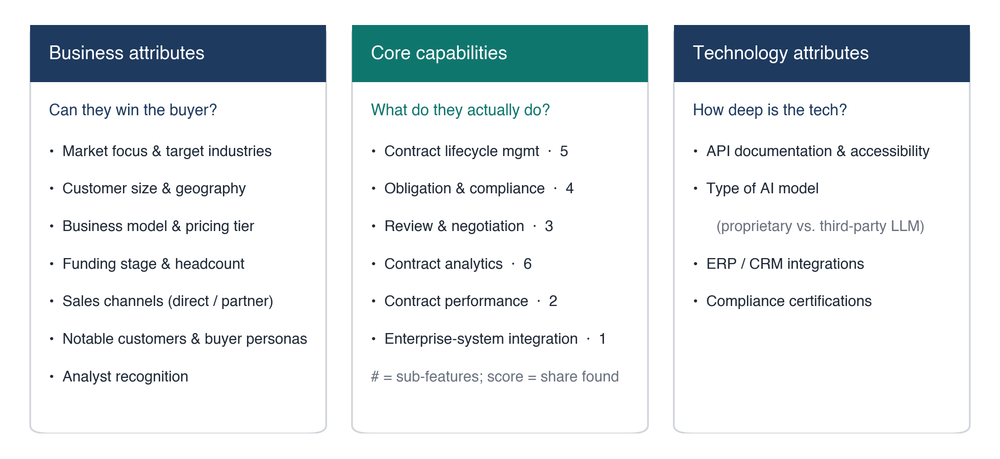
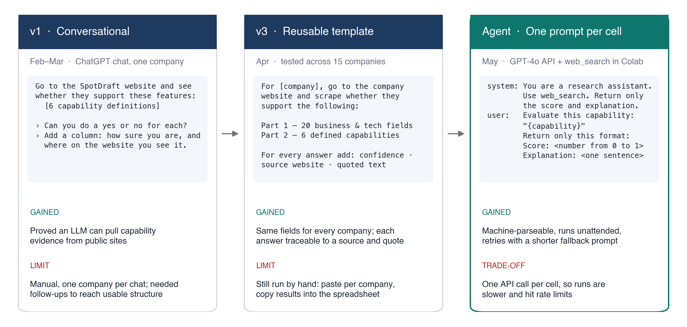
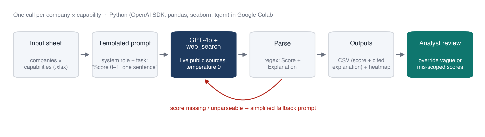
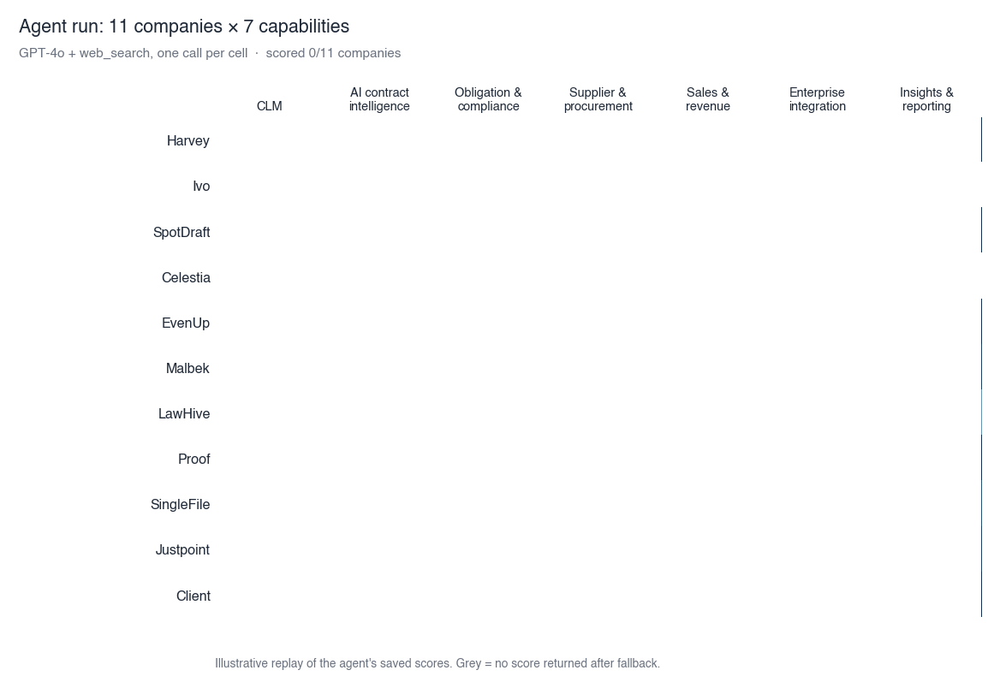
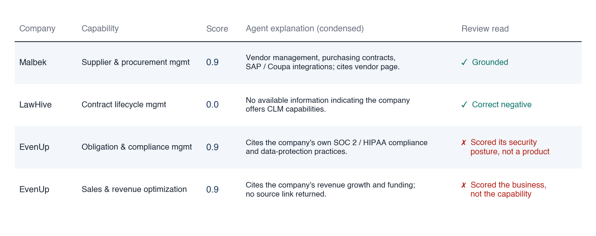
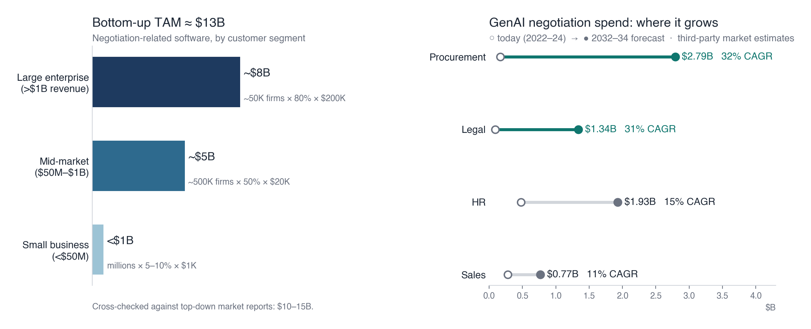
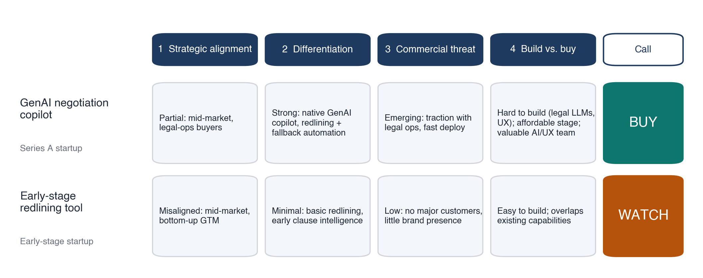

AI · Strategy
GenAI Threat Radar
A competitive-strategy engagement for an enterprise contract lifecycle management (CLM) leader: a repeatable way to find and score GenAI startups entering the market, an LLM agent that automates the scoring, and a sized view of the AI-negotiation opportunity. The findings end in Buy / Build / Watch calls.
- Competitive analysis
- Market sizing (top-down & bottom-up TAM)
- Strategic recommendation
- LLM agent & prompt engineering (GPT-4o + web search)
- Python (pandas, seaborn)
- Data visualization
The client question
Contract management used to be a suite business: whoever ran the full lifecycle, from drafting to approval to obligation tracking, owned the customer. GenAI changed the entry cost. Dozens of startups now go after a single, painful slice of the workflow, like contract review, redlining, or negotiation. They ship fast and sell bottom-up to legal-ops teams.
The client, an established enterprise CLM platform, asked two questions:
- Who is coming, and how do we judge them? The client needed a structured way to classify new GenAI entrants, compare their capabilities, and separate real threats from noise. It also had to be repeatable, not a one-off slide.
- Is AI-assisted negotiation worth owning? How big is the market, how crowded is it, and should the client build, buy, or wait?
The engagement ran about three months (Feb–May 2025) and closed with a readout to the client's product and marketing leadership.
Approach

1 · Map the landscape
The long list started with 1,600+ legal-tech startups pulled from Crunchbase. A deep-dive shortlist was then chosen on relevance to contract workflows. Every shortlisted company was profiled through three lenses:

- Business attributes: can they win the buyer? Market focus, customer size, pricing, funding, sales channels, notable customers.
- Core capabilities: what do they actually do? Six contract-management categories, each broken into concrete sub-features (e.g. review & negotiation = review, redline/edit, negotiation guidance). A category score is the share of its sub-features found in public sources, so "AI-powered platform" marketing copy doesn't earn points on its own.
- Technology attributes: how deep is the tech? API maturity, type of AI model, enterprise integrations, certifications.
2 · Automate the scoring
Manual profiling hit two walls quickly:
- Public data is shallow. Pricing, customer counts, and real product behavior are rarely disclosed, and websites lean on buzzwords.
- Early LLM prompts gave messy output. Free-form ChatGPT extraction returned vague, inconsistently formatted answers that needed heavy cleanup.
Getting from there to a reliable, repeatable scorer was mostly a prompt-engineering problem.
How the prompt evolved
The prompt went through several rounds of iteration before it could run unattended. Each version fixed a specific failure of the one before:

- v1 · Conversational. A ChatGPT chat about one company, with capability definitions pasted in. The output only became usable after follow-ups: first "a yes or no for each feature", then "how sure you are, and where on the website you see it". This showed that an LLM could pull capability evidence from public sites. It did not scale.
- v3 · Reusable template. The follow-ups were folded into one parameterized prompt (
For [company]…) with two parts: 20 business and technology fields, and 6 capabilities with explicit definitions. Every answer had to carry a confidence score, the source website, and the quoted text, so a reviewer could check any cell against its evidence. The template was tested across 15 companies before it was locked. - Agent · One prompt per cell. For automation, one large prompt was split into many small ones: one company × one capability per call. Each call has a fixed system role ("You are a research assistant…"), web search enabled, temperature 0, and a strict two-line output (
Score: <0–1>/Explanation: <one sentence>). A shorter fallback prompt handles the cases where parsing fails.
The biggest structural change came in step 3. A single prompt that fills ~26 fields works in a chat window, where a person reads the answer. A script needs output it can parse without guesswork. Small prompts with a rigid format give it that, and a failure costs one cell instead of a whole company. The trade-off is many more API calls, so runs are slower and hit rate limits (see Limits below).
The scoring agent
The final version runs the whole loop without a pre-scraped dataset:

- Input: a spreadsheet of companies × capability definitions.
- Loop: one GPT-4o call per company × capability, with the
web_searchtool enabled at temperature 0. The prompt asks for a 0–1 score plus a one-sentence explanation citing sources. - Guardrails: regex parsing of the score and explanation. If either is missing or unparseable, the agent re-asks with a simplified fallback prompt.
- Output: a CSV of scores with cited explanations, plus a heatmap image.
- Handoff: a step-by-step runbook so the client's team can rerun it on new companies in Google Colab.
A full run covered 11 companies × 7 capabilities in about 8 minutes.

Why a human stays in the loop. The agent is fast, but it can score the wrong thing. In the sample below, it correctly grounded one score and correctly returned a negative. It also gave a personal-injury legal-AI company 0.9 on obligation & compliance management, because that company is SOC 2 and HIPAA compliant. That describes its security posture, not a compliance product. Final scoring therefore paired automation with analyst review.

3 · What the data showed

- Review & negotiation is table stakes. Every vendor on the shortlist covered at least two-thirds of the review & negotiation sub-features. That's where GenAI startups compete.
- The rest of the lifecycle is thin. No startup covered more than half of contract performance. Only the full-suite CLM vendors came close to the client on obligation management and analytics.
- So the threat is unbundling, not replacement. The data doesn't show startups replacing the whole contract lifecycle. It shows them concentrating on the negotiation layer, the most visible and AI-friendly part of it. That points to partnering with or acquiring focused negotiation players rather than fighting them feature by feature.
4 · Size the negotiation opportunity

- Top-down: adjacent software markets (CLM ~$2.3B, e-sourcing ~$5.2B, proposal management ~$2.3B, CPQ ~$2.6B) add up to roughly $10–15B of negotiation-related software spend.
- Bottom-up: segment count × adoption × annual spend lands at ≈ $13B: about $8B from large enterprises, $5B from mid-market firms, and under $1B from small businesses. The two methods agree.
- Where GenAI grows fastest: GenAI in procurement (~32% CAGR) and legal (~31% CAGR) is forecast to grow at roughly double the rate of HR (~15%) and sales (~11%).
Implication: near term, deepen the lead in procurement and legal negotiation for enterprise and mid-market buyers. Longer term, use GenAI to reach SMBs and the HR and sales use cases.
5 · Recommendation: Buy / Build / Watch
Each emerging player goes through a four-step filter: strategic alignment → differentiation → commercial threat → build-vs-buy economics. Two examples from the final readout:

- A Series A GenAI negotiation copilot → Buy. It is only partly aligned with the client's enterprise focus. But it is clearly differentiated (native GenAI copilot, strong redlining and fallback automation), gaining traction with legal-ops teams, and would be hard to replicate quickly. The price is still reasonable for its stage.
- An early-stage redlining tool → Watch. Its market is misaligned, its features are easy to build and overlap existing capabilities, and it has no meaningful commercial footprint yet. Keep it on the radar and don't spend on it.
Limits & what I'd build next
The agent has real constraints, and they point to the next version:
| Constraint today | Next step |
|---|---|
| Relies on public data, so stealth or early companies return weak signals | Source traceability: store the URLs behind every score for audit |
| One model call per score, with no triangulation | Weighted threat index: combine capability scores with funding and traction to rank who matters most |
| One-off runs, slowed by API rate limits | Scheduled refresh: re-scan new entrants monthly and flag anyone whose capabilities are closing in on the core product |
Put together, this turns a one-time competitive snapshot into a continuously updating emerging-threat radar. Existing competitive-intelligence tools mostly track known rivals for sales battlecards. Systematically catching startups before they show up on anyone's radar, and tying them to a strategic call, is the gap I'd build for.
Skills demonstrated
- Competitive analysis: a three-lens framework with sub-feature scoring, applied to a Crunchbase long list and a deep-dive shortlist.
- Prompt engineering: three documented iterations, from a conversational prompt to a reusable evidence-required template (tested on 15 companies) to per-cell prompts with a strict output format and fallback.
- LLM agent: a GPT-4o + web-search scoring loop in Python with parsing guardrails and a client runbook.
- Critical review of AI output: catching mis-scoped scores and pairing automation with human review.
- Market sizing: top-down and bottom-up TAM that reconcile at roughly $13B, plus growth by buyer function.
- Strategic recommendation: a Buy / Build / Watch decision filter that turns analysis into specific calls.
- Python & data visualization: pandas and seaborn pipelines that produce the capability heatmaps.